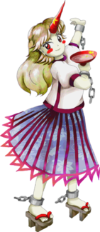
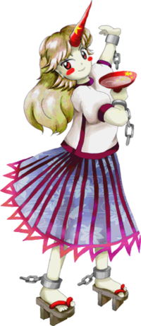

- Welcome to Touhou Wiki!
- Please register to edit. For assistance, check in with our Discord server or IRC channel.
Yuugi Hoshiguma
Yuugi Hoshiguma hoɕigɯma jɯːgʲi (♫) Yugi Hoshiguma | |
|---|---|
|
 Yuugi in Subterranean Animism The So-Called Unexplainable PhenomenonMore Character Titles | |
| Species | |
| Abilities |
Wielding unexplainable phenomena |
| Occupation |
None |
| Location | |
Music Themes | |
| |
Appearances | |
| Official Games | |
| |
| Print Works | |
| |
| Miscellaneous Works | |
| |
Yuugi Hoshiguma (星熊 勇儀 Hoshiguma Yuugi) is an oni currently living in the Ancient City, which is in the Underworld. She has an unexplainable ability. She was once one of the Big Four of the Mountain, along with Suika Ibuki, and she lives alongside many other oni that were forced below ground.
General Information[edit]
Yuugi first appears as the stage 3 boss and midboss of Subterranean Animism, which is quite suprising for an oni, and was a target on stage 6 of Double Spoiler. She made a cameo appearance as one of the many background characters in Hopeless Masquerade, but made an appearace in Marisa Kirisame's ending.
Personality[edit]
Yuugi is a very firm and straightforward oni. She likes those who are strong and brave, and has no mercy for the weak and cowardly.
Ability & Strength[edit]
Yuugi, possesses enormous strength that far exceeds that of any other kind of youkai. She has arguably the greatest super-strength, as even Suika, that was considered the strongest in this sense by the time of Silent Sinner in Blue, admits that Yuugi might be physically stronger than she is. In Symposium of Post-mysticism, it is said that, according to rumors "her superhuman strength is of the level where her footsteps alone are enough to make nearby buildings collapse". She has also shown to be able to easily produce heat, and flatten trees merely by screaming.
- Wield unexplainable phenomena
Anomalies, strength, disorder, and spirits (怪力乱神 kai-ryoku-ran-shin) is a metaphor for unexplainable phenomena that originates from the Analects of Confucius, where one of his disciples said "the Master never talked of anomalies, strength, disorder, or spirits." (子不語怪力亂神 shifugo-kairiki-ranshin) Furthermore, Yuugi's title is "the so-called unexplainable phenomenon".
More accurately, Confucius did not talk about unnatural things (strangeness (怪異)), mysterious powers (courage (勇力)), things contrary to reason (devious rebellion (悖乱)), and strange things related to god (fierce god (鬼神)). In other words, "strangeness" (怪異), "courage" (勇力), "devious rebellion" (悖乱), and "fierce god" (鬼神) are why "怪力乱神" is referred to as "anomalies, strength, disorder, and spirits." It's appropriately unclear what exactly this ability allows Yuugi to do, since the ability itself is a metaphor for things that cannot be explained.
Her very name, "Yuugi" (勇儀), might've come from the courage (勇力) that's represented as "strength" in "anomalies, strength, disorder, and spirits."
Occupation[edit]
Yuugi spends her time in Former Hell, fraternizing with the other oni, engaging in frequent drinking contests and generally having a rowdy time.
Possessions[edit]
Yuugi carries a sake dish called the "Hoshiguma Dish". It raises the quality of any sake poured into it. Kasen Ibaraki later uses this to transform some of her own sake for a party at the Hakurei Shrine. The dish itself is considered a masterwork of the oni.
Background Information[edit]
Name[edit]
Yuugi Hoshiguma (星熊 勇儀) is her full name. The characters of Hoshiguma (星熊) mean "star" (星) and "bear" (熊). The characters in Yuugi (勇儀) mean "bravery" (勇) and "ritual" (儀). As said in the Ability's section, "Yuugi" could've come from courage (勇力).
In the legend of Shuten Douji, a particularly vicious oni who lived atop Mt. Ooeyama, one of Shuten Douji's four strongman demons was named Hoshiguma Douji. This may or may not be related to Yuugi's concept.
Design[edit]
Yuugi has long, straight blonde hair, red eyes, and a single red horn coming out of her forehead. She wears a white, short-sleeved shirt with red trim at the cuffs, neck, and bottom and a dark blue semi-transparent skirt with red highlights and trim. Her wrists and ankles are manacled, with short, broken chains attached to the manacles. In the same interview as mentioned above, the interviewer mentions that her clothes look kind of like a gym uniform and that it'd be easy to do exercises in them. Following that, ZUN also said that Yuugi's skirt actually was semi-transparent.[1]
In Hopeless Masquerade, Yuugi can be seen wearing a Kimono outfit with a busty chest. This dress was first use in the unofficial promotional flyer for Subterranean Animism by alphes, who's known to draw characters with a large chest. Suika also wears a similar outfit, but without the similar measurements. Although it's unclear to see in the SA artwork, she is shown to have pointed ears in her SoPM illustration.
Backstory[edit]
Yuugi was one of the many youkai and oni who moved into the Underworld in Hell when Gensokyo first became isolated from the Outside World. She and the others didn't wish to be chained to the rules that were set up, and decided to move down there. Though a non-aggression pact had apparently been negotiated, Yuugi realized that she wasn't enjoying spending time with humans, so she took up residence in Former Hell to be with kindred spirits. They built their own society and lived there, in isolation, for a really long time.
Yuugi's Appearances[edit]
Games[edit]
| Attention: This section is a stub and it needs expanding with more information related to the section's topic. If you can add to it in any way, please do so. |
- Subterranean Animism
When the heroine arrives at the Ancient City in Stage 3 of Subterranean Animism, Yuugi rushes out to meet her. After Yuugi's initial attack is repelled, she promises to lead the heroine to the Palace of the Earth Spirits in exchange for giving her a good fight.
Spin-offs[edit]
- Double Spoiler
In Double Spoiler, Yuugi used a few spell cards and had Aya Shameimaru and Hatate Himekaidou taking photos of her and her danmaku.
- Hopeless Masquerade

Yuugi made a background cameo appearance in Hopeless Masquerade on the Human Village stage. She is seen standing on a balcony of the tavern with Suika Ibuki, drinking sake. Also in Marisa Kirisame's ending, she comes back the day after the incident is resolved, and sounds somewhat disappointed that the battles are over.
Literature[edit]
In chapter 16 of Wild and Horned Hermit, Yuugi lends the Hoshiguma Dish to Kasen Ibaraki, so that she can raise the quality of the sake that she is going to bring to the flower-viewing party. She also informs Suika Ibuki about Kasen acting as a hermit.
Relationships[edit]
Yuugi is old friends with Suika, and presumably with the other two Big Four of the Mountain.
Kasen describes Yuugi as an acquaintance of hers in Wild and Horned Hermit when she used the oni's sake dish to make her own sake better.
Gallery[edit]
Yuugi's sigil in The Grimoire of Marisa

Yuugi in a promotional flyer by alphes
Spell Cards[edit]
| Name | Translated | Comments | Games | Stage | ||
|---|---|---|---|---|---|---|
| Total: 8 | ||||||
| 鬼符「怪力乱神」 | Oni Sign "Anomalies, Strength, Disorder, and Spirits" | SA GoM |
St. 3: E/N/H/L ---- | |||
| 怪輪「地獄の苦輪」 | Mysterious Ring "Hell's Wheel of Pain" | SA | St. 3: E/N | |||
| 枷符「咎人の外さぬ枷」 | Shackles Sign "Shackles a Criminal Can't Take Off" | SA | St. 3: H/L | |||
| 力業「大江山嵐」 | Feat of Strength "Storm on Mt. Ooe" | SA | St. 3: E/N | |||
| 力業「大江山颪」 | Feat of Strength "Wind Blowing Down from Mt. Ooe" | SA GoM |
St. 3: H/L ---- | |||
| 四天王奥義「三歩必殺」 | Big Four Arcanum "Knock Out In Three Steps" | SA GoM |
St. 3: E/N/H/L ---- | |||
| 光鬼「金剛螺旋」 | Light Oni "Adamant Helix" | DS | St. 6 | |||
| 鬼符「鬼気狂瀾」 | Oni Sign "Dreadful Raging Waves" | DS | St. 6 | |||
| 鬼声「壊滅の咆哮」 | Oni's Voice "Annihilating Roar" | DS | St. 6 | |||
Additional Information[edit]
- Like other oni, Yuugi is ridiculously strong and, in turn, likes strong people. She also enjoys drinking heavily and raising a ruckus.
- Yuugi Hoshiguma is thus far the only boss who stays around after her mid-boss defeat and remains in front of the player throughout the end of the stage, unless you count Mystia Lorelei and Nemuno Sakata, who begin the end-of-stage battle immediately after the mid-boss fight.
- The JoJo that was talked about in the interview, is Jonathan Joestar, whom at one point has to defeat an undead adversary while being tasked by his master William Anthonio Zeppeli to do so while holding a glass of wine, and to not spill a single drop. Marking Yuugi as yet another with a JoJo counterpart in ZUN's mind.
- According to an interview in Cara☆Mel for Cage in Lunatic Runagate 7, ZUN said the theme behind Yuugi was to make an energetic, oni-like oni, since there would be lots of oni in hell.[1]
Fandom[edit]
Official Profiles[edit]
|  | ○３面ボス 語られる怪力乱神 星熊 勇儀（ほしぐま ゆうぎ） 種族：鬼 萃香と共に山の四天王と呼ばれた鬼の一人。今は旧都に住んでいる。 ここには様々な妖怪が住んでいるのだが、その中でも代表的な妖怪が鬼である。 鬼達はこの他にも地上で嫌われた妖怪達を率先して受け入れた。 それは地獄の怨霊の封じる事である。それをする代わりに如何なる妖怪も地下都市には入らせないと約束をしたのだ。 鬼達は地上との交流を断ち、完全に新しい社会生活を人知れず営んでいたのである。
|
Stage 3 boss The Spoken-of Unexplainable Phenomena (Anomalies, Strength, Disorder, and Spirits)
Species: Oni One of the oni who, together with Suika, was said to be one of the big four of the mountain. Various youkai live here, though the oni are the most representative group among them all. The oni were proactive in accepting even those youkai who have become hated in the overworld. That condition was to seal the vengeful spirits of hell. In return, the youkai from the overworld promised not to enter the underground city. The oni have now cut off all communication with the overworld, and have settled into a new society completely unknown to humans.
|
Official Sources[edit]
- 2008/05/25 Subterranean Animism Demo - Stage 3 dialogue ; Trial profile (pre-official profile)
- 2008/08/16 Subterranean Animism - Stage 3 dialogue ; Settings.txt (official profile)
- 2009/07/28 The Grimoire of Marisa - Yuugi Hoshiguma's spell cards
- 2010/03/14 Double Spoiler - Stage 6 spell card comments
- 2010/08/26 Oriental Sacred Place - Chapter 10 (cameo)
- 2010/09/25 Wild and Horned Hermit - Chapter 2 & Chapter 16 (cameo)
- 2012/04/27 Symposium of Post-mysticism
References[edit]
- ↑ 1.0 1.1 Interview on Subterranean Animism with Cara☆Mel (Nico Nico Video link)
| This page is part of Project Characters, a Touhou Wiki project that aims to write proper descriptions for all official characters of Touhou Project. Please keep the character page guidelines in mind when contributing. |